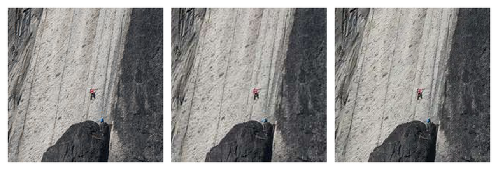

从零写一个图像与视频编码
纯 Python 实现，自己定义的码流格式，编码器和解码器都在仓库里。没有调用 libjpeg、WebP 或 FFmpeg，熵编码、变换、量化和容器全部自写。
码流怎么走
一条主线贯穿图像和视频：可逆色彩变换 → 块变换 → 量化 → 扫描 → 上下文算术编码。视频只是在最前面多了一层帧间预测。
视频（.mtc）分 I / P 帧：I 帧走上面整条链路；P 帧对每个 8×8 块先判断残差量化后是否全零，全零即 skip 只发 1 个标志位，否则发残差系数。直流分量按行内左邻块差分预测。
压缩率与画质
四张 512×512 实拍图，质量参数扫 13 档，和 JPEG、WebP、PNG 在同一坐标系里比。横轴是 PSNR，纵轴是每像素比特数（对数轴），曲线越靠左下越好。窄屏下表格可左右滑动查看完整列。
图 1 · photo_c 的率失真曲线。同一条曲线上越往右下代表码率越高、画质越好；同一 PSNR 下纵坐标更低的方案更省码率。
| 图像 / 目标画质 | MTB 4:2:0 | JPEG | WebP | 相对 JPEG |
|---|---|---|---|---|
| photo_a · 30 dB | 0.185 | 0.329 | 0.157 | −43.7% |
| photo_a · 33 dB | 0.409 | 0.669 | 0.328 | −38.9% |
| photo_a · 36 dB | 0.892 | 1.373 | 0.752 | −35.0% |
| photo_b · 33 dB | 0.110 | 0.261 | 0.088 | −57.9% |
| photo_b · 36 dB | 0.600 | 0.884 | 0.473 | −32.1% |
| photo_b · 39 dB | 1.250 | 1.763 | 1.064 | −29.1% |
| photo_b · 42 dB | 2.327 | 3.000 | 1.967 | −22.4% |
| photo_c · 30 dB | 1.114 | 1.371 | 1.049 | −18.8% |
| photo_c · 33 dB | 1.783 | 2.309 | 1.657 | −22.8% |
| photo_c · 36 dB | 2.459 | 3.264 | 2.273 | −24.7% |
| photo_c · 39 dB | 3.205 | 4.248 | 2.990 | −24.5% |
| photo_c · 42 dB | 4.270 | 5.787 | 3.944 | −26.2% |
| render_d · 42 dB | 0.057 | 0.185 | 0.047 | −69.4% |
表 1 · 单位 bpp（每像素比特）。数值越低越省；目标画质由率失真曲线上线性插值得到。
但这不只是“我们比 JPEG 强”。同画质下 WebP 反而比我们小 6%–27%（中位数 18%），这条要保持诚实：算术编码 + 上下文模型让老的霍夫曼基线 JPEG 吃亏，但 WebP 本身也有更细的预测和自适应量化。

图 2 · 都压到 1.43 bpp 后的同区域细节（左→右：MTB 4:2:0 / JPEG / WebP）。PSNR 分别是 31.44 / 30.21 / 31.91 dB：我们对 JPEG 领先约 1.2 dB，对 WebP 落后约 0.5 dB。窄屏可左右滑动查看三幅。
视频：帧间究竟省了多少
24 帧、512×512、GOP 12。做一个固定机位（背景不动、物体移动）和一个平移镜头（每帧横移 3 像素），看 P 帧在哪种内容下起作用。
图 3 · 固定机位场景下逐帧字节数。I 帧吃到 19.5 KB，P 帧只剩 2–3 KB；MJPEG 每帧都要 30 KB 左右。
| 场景 | MTC 帧间 | MTC 全帧内 | MJPEG | 平均 PSNR |
|---|---|---|---|---|
| 固定机位 | 100.7 KB | 460.4 KB | 747.2 KB | 34.8 dB |
| 平移镜头 | 479.0 KB | 477.0 KB | 766.6 KB | 34.5 dB |
表 2 · 同一质量档（q80、4:2:0）。固定机位里帧间比帧内省 4.6 倍、比 MJPEG 省 7.4 倍；平移镜头下帧间编码几乎没有收益——因为没有运动估计，整块位移让 skip 失效。
无损模式与速度
同一套算术编码器换个前端：中值边缘预测（MED）+ 邻域活跃度上下文，直接编残差。这条路是完全可逆的，解码结果逐像素等于原图。
| 图像 | MTB 无损 | PNG | 相对 PNG |
|---|---|---|---|
| photo_a | 7.15 bpp | 8.64 bpp | −17.2% |
| photo_b | 7.08 bpp | 9.53 bpp | −25.7% |
| photo_c | 11.21 bpp | 17.42 bpp | −35.7% |
| render_d | 4.71 bpp | 5.14 bpp | −8.4% |
表 3 · 四张图解码全部 bit-exact（测试断言 array_equal 通过）。纹理越密的图，上下文建模的收益越大。
| 512×512 有损 q80 | 编码 | 解码 | 码率 | PSNR |
|---|---|---|---|---|
| photo_a | 1.94 s | 1.01 s | 0.60 bpp | 34.58 dB |
| photo_b | 0.16 s | 0.17 s | 0.43 bpp | 35.13 dB |
| photo_c | 0.66 s | 0.65 s | 1.43 bpp | 31.44 dB |
| render_d | 0.17 s | 0.17 s | 0.12 bpp | 44.86 dB |
表 4 · 纯 Python、单线程、numpy 做变换。耗时随要编的系数个数增长，细节多的图更慢；和 libjpeg-turbo 差两个数量级，这是语言决定的，不是算法决定的。
两个容器，两种后缀
图像容器 .mtb、视频容器 .mtc。类型判断靠文件头前 4 字节的魔数，不靠扩展名，所以改了后缀也不会把文件认错。
| 项目 | MTB（图像） | MTC（视频） |
|---|---|---|
| 魔数 | MTB1 | MTC1 |
| 头长度 | 12 字节 | 16 字节 |
| 头字段 | ver, mode, quality, flags, w, h | ver, 4:2:0, quality, gop, w, h, frames |
| 扩展名 | .mtb | .mtc |
| 系统 MIME | image/x-mtb | video/x-mtc |
| 模式编号 | 0 灰度 / 1 4:4:4 / 2 4:2:0 / 3 灰度无损 / 4 RGB 无损 | 每帧 I 或 P，gop=0 为全帧内 |
表 5 · 头结构分别是 <4sBBBBHH 和 <4sBBBBHHI，后面直接跟算术编码字节流，没有别的元数据段。
双击就能看：图标与文件关联
Windows 下把两种后缀注册成“由本程序打开”。图标统一是圆角方块加一个白色大写 M，照片红、视频蓝，在资源管理器里一眼能分清。
MTB · 图像 · 红
MTC · 视频 · 蓝
图标由 tools/make_icons.py 用 Pillow 直接画出来：1024 画布上画圆角矩形和粗体 M，再降采样成 16/24/32/48/64/128/256 七档写进 .ico（放在 deploy/icons/ 给系统用，assets/icons/ 里的 512 png 给网页用），小尺寸下笔画仍然清楚。
python deploy\windows_register.py # 写入 HKCU，不需要管理员 python deploy\windows_register.py --python C:\Python312\python.exe python deploy\windows_register.py --unregister # 撤掉关联
注册内容：.mtb → ProgID MTB.Image，.mtc → MTB.Video；每个 ProgID 带友好名、Content Type、PerceivedType、DefaultIcon 和 shell\open\command（指向 deploy\mtb_launcher.py，用 pythonw 起，双击时不会闪黑框）。
- 关于“设为默认”。Win10/11 不允许程序静默把自己改成默认打开方式——
UserChoice有哈希校验，只有用户在“打开方式”里勾一次“始终使用此应用”才会写入。我们能做的是把 ProgID、图标和打开命令都注册好，第一次双击时系统直接认出“MTB 图像”，选一次之后就是默认。 - 换解释器要重跑。关联里记的是绝对路径的 pythonw，Python 升级或换目录之后双击会失效，重跑一次注册脚本即可。
跨平台：一份源码，三个桌面，一个安卓
核心编解码只用 numpy 和 Pillow，没有任何 Windows 专有调用；窗口、图标、注册表这些平台相关的部分单独抽在 viewer.py 和 deploy/ 里。这是能搬去别的系统的前提。
| 平台 | 怎么跑 | 界面 | 状态 |
|---|---|---|---|
| Windows | CPython + 注册表关联，双击开 viewer | tkinter | 已完成，已实测 |
| Linux | 同一份源码，装 python3-tk，加一个 .desktop + xdg-mime 注册 | tkinter | 代码就绪，缺安装脚本 |
| macOS | python.org 版 Python（自带 Tk），.app 包 + duti 注册后缀 | tkinter | 代码就绪，缺打包脚本 |
| Android | 需要把 CPython 塞进去，见下面三条路 | 要换掉 tkinter | 待动手 |
| HarmonyOS | 不做：ArkTS + 原生 SDK，等于再学一门语言 | — | 放弃 |
| iOS | 不做：必须 macOS + Xcode + 苹果开发者签名 | — | 放弃 |
表 6 · 桌面三系统的差异只在“怎么把后缀和图表挂上”，编解码本身一行都不用改。
安卓的三条可行路径，按投入从小到大：
pkg install python numpy pillow，把仓库拷进手机目录，直接 python -m mtcodec。零改动，半小时能跑通；缺点是只有终端，没有桌面图标。encode_image → 写 .mtb。代价是 APK 约 40–70 MB。buildozer android debug，UI 换成 Kivy 组件。一套界面桌面和安卓通用，但界面这一层要重写。建议顺序：先用 Termux 验证同一份代码在 ARM 安卓上算得对（这一步不改代码，只验证算术编码和 numpy 在手机上的结果），确认之后再用 Chaquopy 出正式 APK。安卓端唯一必须重写的是界面——viewer.py 用的 tkinter 在安卓上没有，需要换成一个图片控件加播放按钮。
怎么用
命令行和库两种入口，输出都是单文件；输出路径不写扩展名时会自动补 .mtb / .mtc。
python -m mtcodec encode photo.png out.mtb --quality 85 --subsample 420 python -m mtcodec decode out.mtb back.png python -m mtcodec encode photo.png lossless.mtb --lossless python -m mtcodec video-encode frames/ out.mtc --quality 80 --gop 12 python -m mtcodec video-decode out.mtc frames_out/ python -m mtcodec open samples/demo.mtc # 直接开窗口播放
import mtcodec, numpy as np blob = mtcodec.encode_image(img, quality=85, subsample="420") img2 = mtcodec.decode_image(blob) print(mtcodec.psnr(img, img2)) blob = mtcodec.encode_video(frames, quality=80, gop=12) frames2, stats = mtcodec.decode_video(blob)
包名 mtcodec，格式常量集中在 mtcodec/format.py：EXT_IMAGE = ".mtb"、EXT_VIDEO = ".mtc"、MIME_IMAGE、MIME_VIDEO，改一处即可全文生效。
它现在还不够好的地方
- 没有运动估计。平移镜头下 P 帧退化回帧内水平，这是最明显的一块短板；加一个 8×8 全搜索 + 半像素插值就能把这一段追上几倍。
- 没有码率控制。只有固定量化步长，出不了“目标 200 KB”这种约束，得靠扫描质量参数。
- 只按 MSE 优化。量化步长是频率先验，没有感知加权、没有 SSIM / VMAF 导向，也没有色度视觉冗余压缩。
- 格式能力窄。只支持灰度 / RGB，8 位；没有 4:2:2、alpha、渐进式传输、ROI 和多帧并行。
- 速度。熵编码是纯 Python 逐符号循环，单张 512×512 需要 0.2–2 秒；同样的算法换成 C 或 SIMD 会快 100 倍以上。